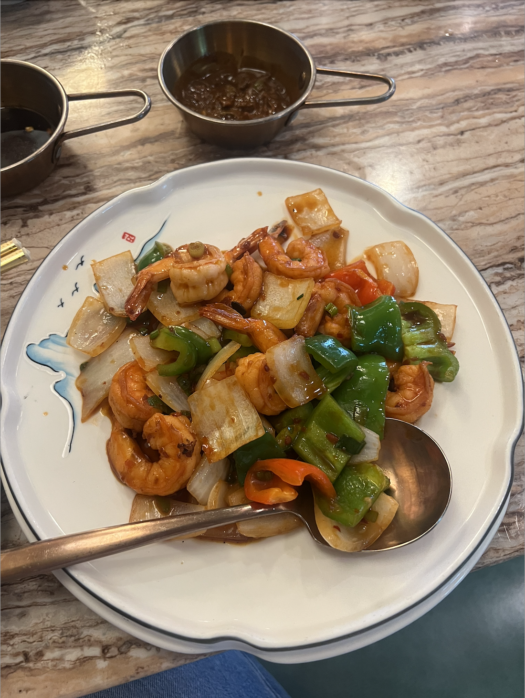
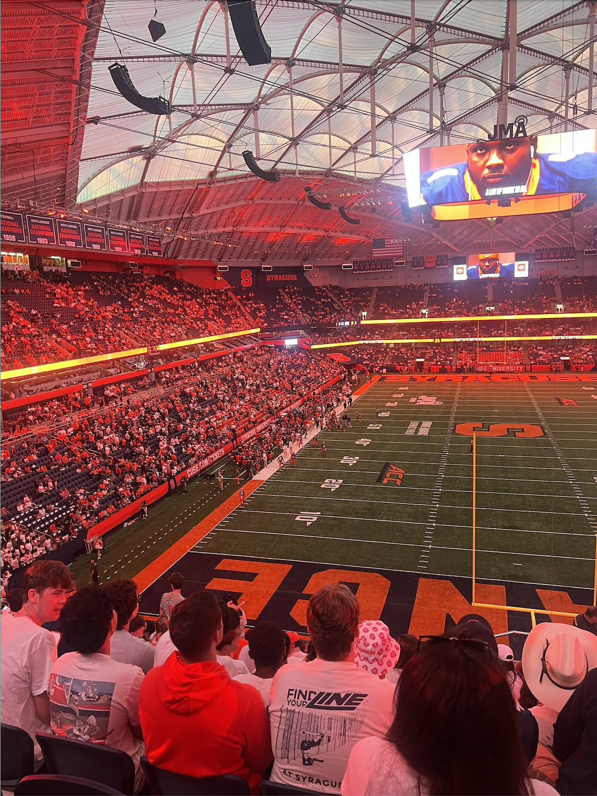

A collection of my favorite places and experiences at Syracuse: study spots, good eats, and traditions. These are all the things that make campus feel like home.
STUDY SPOTS
- Eggers Café – Located on the 3rd floor of Eggers Hall, this cute café has large windows that bring in lots of daylight, a sandwich bar, and a quiet study space.
- 2nd Floor of Bird Library – Bird Library is the most popular library on campus, and my favorite thing is that, as you go up its levels, each floor gets quieter. The second floor has my favorite layout!
- Panasci Lounge – Located in Schine, this open room upstairs has a variety of seatings options, including couches, comfy chairs, and regular study tables. I find that it is a very cozy option with a great view of campus!

ON-CAMPUS EATS
- CoreLife Eatery in Schine
- Halal Shack in Schine
- Choolah in Newhouse and Goldstein Student Center
- Eggers Café
- Cuse Chicken in the Goldstein Student Center
OFF-CAMPUS EATS
- Red Chili
- Recess Coffee
- Guadalajara Mexican Restaurant
- Marshall Street Favorites:
- Poke Fish
- Oishi Sushi
- Salt City Coffee
- Collegetown Bagels





GAME-DAY TRADITIONS
- Wear orange/SU merch
- Watch the Marching Band perform on the Quad before the game
- Learn the student game chants
- Enjoy free pre-game activities on the Quad before the game, including music, free food, and photobooths
- Try to spot Otto in the Dome
- Go celebrate our wins at Varsity Pizza on Marshall Street post-game!
OFF-CAMPUS ACTIVITIES
- Enjoy a sunny day at Green Lakes State Park
- Take a day trip to Skaneateles
- Study at Barnes & Noble
- Go shopping at Destiny Mall
- Attend a Syracuse Mets baseball game
- Explore downtown Syracuse
- Get $6 frozen yogurt at Fayette's Soft Serve Café on Wednesday nights